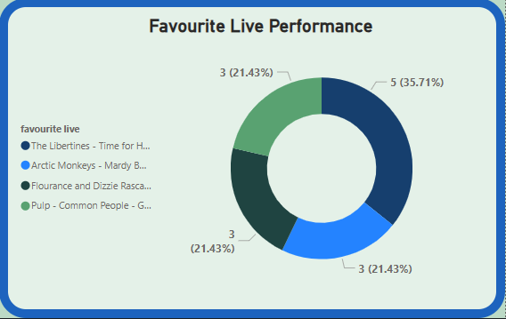

Best Live Performance Survey Results
The chart shows that the favourited Live Performance was
The libertines perfoming 'Time For Heroes', at Reading Festival
in 2015.
Surpisingly, the remaining votes were all evenly spread out between
Arctic Monkeys performing 'Mardy Bum' at Glastonbury in 2007 (My Favourite),
Flourance and Dizzie Rascal also at Glastonbury, and Pulp performing
'Common People' when they stepped up last minute as the Stone Roses
pulled out.
